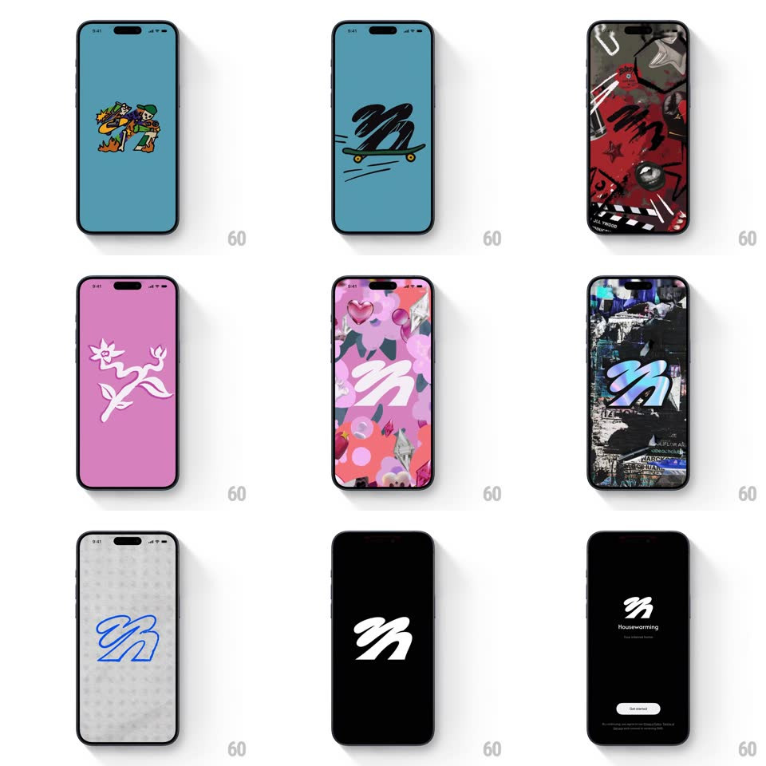

Media
Frame-by-frame

Rebuild this animation 1:1: Housewarming's splash - the wordmark gives way to a rapid-fire montage of stylized logo treatments (doodle explosion, painterly pink, floral pattern, concrete stencil, truck graffiti) before landing on the black screen with the white mark, name, and Get started button.

Rebuild this animation 1:1: Housewarming's splash - the wordmark gives way to a rapid-fire montage of stylized logo treatments (doodle explosion, painterly pink, floral pattern, concrete stencil, truck graffiti) before landing on the black screen with the white mark, name, and Get started button. ## Integration Integration: stack-agnostic spec - springs given as stiffness/damping, timed motions as duration + curve; map every value to your framework and animation library of choice. ## Scene Sequence of full-bleed frames: white with the small "housewarming" wordmark; teal with a maximalist doodle burst around the mark; black with the white squiggle "h" mark; pink with painterly red strokes; pink floral pattern; dark concrete with a stenciled mark; a green truck side with the mark painted on; final black frame with the white mark, "Housewarming", and a white "Get started" pill. ## Motion spec Pattern: fast-cut brand montage, ~3s total. - Cuts: each treatment holds 250-350ms and hard-cuts to the next - no crossfades; the mark jumps scale and style each frame but stays centered. - Variance: some frames animate internally - the doodle burst pops outward (scale 0.9 -> 1, 200ms), the floral pattern drifts (translate 10px), the painterly strokes wipe on. - Landing: the final black frame fades in (300ms); the mark holds, then "Housewarming" fades below it (250ms, +200ms) and the Get started pill rises (250ms, +150ms). ## Calibration - The mark is the constant: every frame restyles it, never moves it off-center. - The pace is rhythmic - roughly equal holds, like a flipbook of identities. ## Reduced motion Treatments crossfade (300ms each); internal motion removed. ## Don't miss - The montage cycles distinct art directions (doodle, painterly, floral, stencil, graffiti) - not recolors of one design. - The final frame is minimal: mark, name, one button, nothing else.